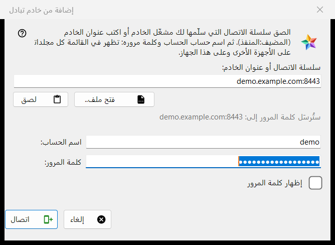
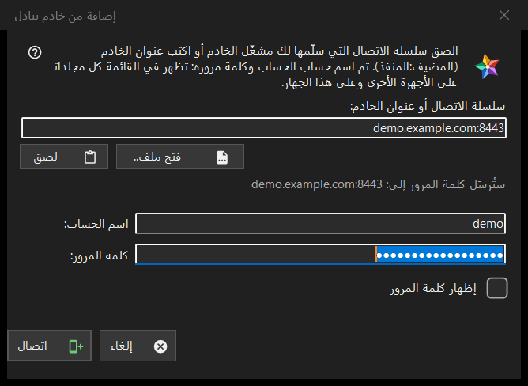

إضافة من خادم تبادل
الغرض من هذه النافذة
يربط هذا الكمبيوتر بحساب على خادم تبادل، فتظهر مجلدات كل أجهزة ذلك الحساب في قائمة الموارد. يُفتح من الزر إضافة من خادم تبادل.. في القسم أجهزتي من قائمة الموارد، وعند إسقاط سلسلة اتصال أو ملف على العارض أو كتابة واحدة في مربع المجلد.


بهذا الترتيب
- الصق سلسلة الاتصال من مشغّل الخادم، أو اكتب العنوان بصيغة host:port، أو اضغط الزر فتح ملف..
- تحقق من السطر (ستُرسَل كلمة المرور إلى: ..)؛ هذا العنوان هو المكان الوحيد الذي تذهب إليه كلمة المرور.
- أدخل اسم المستخدم وكلمة المرور.
- اضغط الزر اتصال.
- إذا سأل البرنامج عن شهادة الخادم، فقارن البصمة بالبصمة التي ذكرها المشغّل.
عناصر النافذة
سلسلة الاتصال أو العنوان
يقبل المربع الأول سلسلة اتصال (تبدأ بـ FMSEXCH1:) أو عنوانًا بصيغة host:port. الزر لصق يملؤه من الحافظة، من نص أو من صورة رمز QR، والزر فتح ملف.. يقرأ ملف .fmsexch أو صورة QR. اللصق يملأ النموذج فقط: لا يُرسَل شيء حتى تضغط اتصال. يعرض السطر تحت المربع إلى أين ستذهب كلمة المرور؛ وعنوان الويب أو رمز المجلد أو السلسلة التالفة تُرفض هناك بكلمات واضحة.
اسم المستخدم وكلمة المرور
يُملأ حقل اسم المستخدم من السلسلة عندما تحمل واحدًا. حقل كلمة المرور مقنَّع، والخيار إظهار كلمة المرور يكشفه. عند الضغط على اتصال تُفرَّغ مربعات كلمة المرور قبل أن يغادر أول بايت الكمبيوتر. يعرض سطر الحالة التقدم، وعند الفشل السبب: اسم مستخدم أو كلمة مرور غير مطابقة، أو محاولات كثيرة جدًا، أو خادم لا يجيب.
سلسلة دعوة
السلسلة التي هي دعوة تسمّي الخادم بالفعل وتحوّل النافذة إلى إنشاء حساب: يظهر الحقل كلمة المرور مرة أخرى وملاحظة عن قاعدة كلمة المرور (10 أحرف على الأقل، مع حرف لاتيني كبير وآخر صغير ورقم)، ويصبح نص الزر إنشاء الحساب. وللخادم الكلمة الأخيرة في القاعدة.
شهادة الخادم
إذا كانت الشهادة غير معروفة يعرض سؤال بصمتها ويسأل هل تثق بالخادم وتتذكّره؛ والجواب الافتراضي هو لا. إذا سمّت السلسلة بصمة وقدّم الخادم بصمة أخرى، تُعرض الاثنتان ولا يُتذكَّر شيء ولا تُرسَل كلمة مرور.
تسجيل الدخول من جديد
عند فتح النافذة لإدخال خادم قائم لتسجيل الدخول من جديد، تعرض العنوان واسم المستخدم للقراءة فقط، وتكون البصمة التي يتذكرها ذلك الإدخال هي مرساة الثقة.